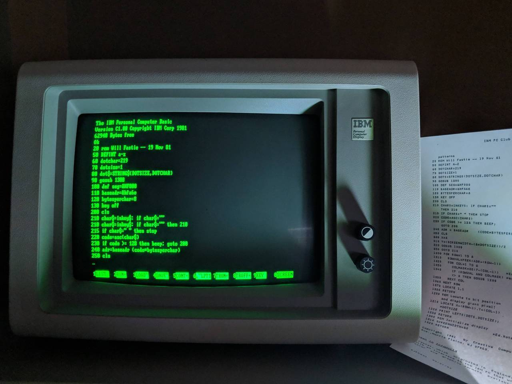

airconditionedcomputingnightmare:
The original IBM PC had no in-ROM setup like most PCs made in the decades since. (Setup and configuration was carried out using a set of switches on the motherboard) However, there was an in-ROM BASIC programming interpreter - a standard feature of many systems from the period.